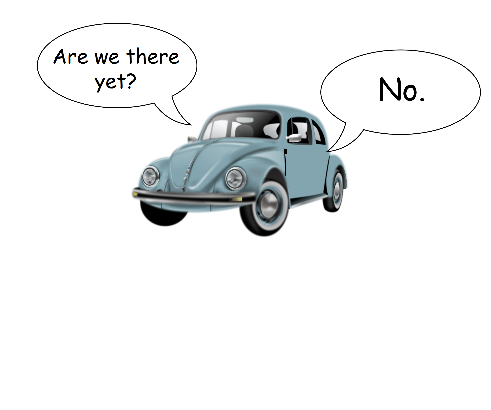
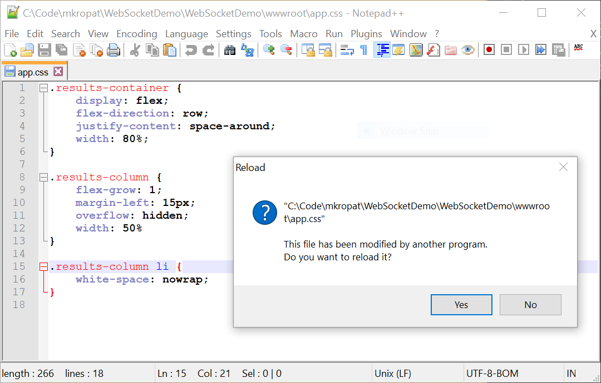
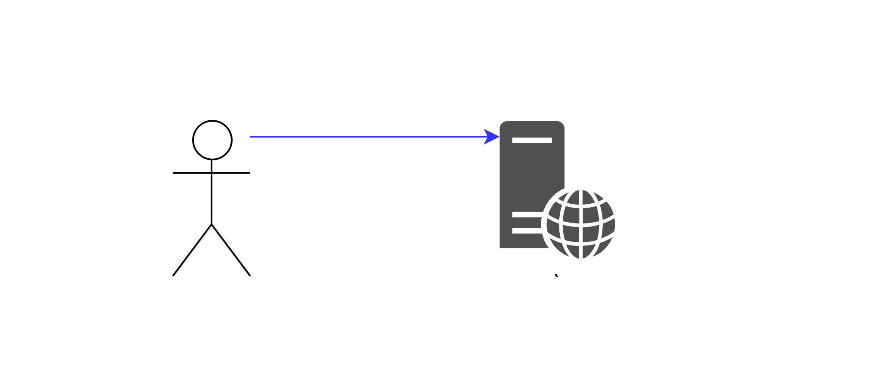

Anatomy of a
Push-to-Browser
Architecture
A talk by @MichaelKropat
- Centralized vs Decentralized
- Functional vs Object Oriented
- Static Typing vs Dynamic
- Monoliths vs Microservices
- Synchronous vs Asynchronous
- Containers vs Serverless
- Parallelism vs Event Loops
Push vs Pull
Pull
Beetle icon by Rasmussen
How does it know when to reload?
Lightning icon by Smashicons from www.flaticon.com is licensed by CC 3.0 BY
Why push?
- More efficient than polling
- Feels snappier
- Less noise when troubleshooting
- Support multi-user scenarios "for free"
- Help avoid race conditions in the backend
Why not push?
- It's not so much "instead of" pull, more like "in addition to"
Questions?
Up next: High-level Architecture
Scaling
Questions?
Up next: WebSocket protocol details
Things I Wish Someone Told Me
About WebSockets
Streams
Messages
Frames?
WebSocketReceiveResult response;
var message = new List();
var buffer = new byte[4096];
do
{
response = await socket.ReceiveAsync(buffer);
message.AddRange(buffer, 0, response.Count);
} while (!response.EndOfMessage);
return (response, message);
Proxies
Use TLS!
Keepalives
public void Configure(IApplicationBuilder app)
{
app.UseWebSockets(new WebSocketOptions
{
KeepAliveInterval = TimeSpan.FromMinutes(2),
});
}
Same-origin policy
On attacker's website:
let url = 'wss://vulnerablesite.example.com/websocket';
let ws = new WebSocket(url);
ws.onmessage = console.log.bind(console);
Two Schools of Thought:
- Auth check in HTTP
- Auth check in WebSocket
Two Loops
- Receive
- Send
using (var socket = await context.WebSockets.AcceptWebSocketAsync())
{
var pushTask = Task.Run(() => PushMessages(_messageSource, socket));
await ReceiveMessages(socket);
await pushTask;
await socket.CloseAsync();
}
WebSocket Thread-safety
// Thread-safety:
//
// - It's acceptable to call ReceiveAsync and SendAsync in
// parallel. One of each may run concurrently.
// - It's acceptable to have a pending ReceiveAsync while
// CloseOutputAsync or CloseAsync is called.
// - Attemping to invoke any other operations in parallel may
// corrupt the instance. Attempting to invoke a send operation
// while another is in progress or a receive operation while
// another is in progress will result in an exception.
Two ways to close
try
{
while (true) {
var response = await socket.ReceiveMessage();
if (response.MessageType == WebSocketMessageType.Close)
break;
}
await socket.CloseAsync();
}
catch (WebSocketException ex)
{
switch (ex.WebSocketErrorCode)
{
case WebSocketError.ConnectionClosedPrematurely:
// handle error
default:
// handle error
}
}
Event Fan-out
var messages = new ConcurrentQueue();
pushMessageSource.OnMessage += messages.Enqueue;
while (true)
{
if (!messages.TryDequeue(out var message))
{
await Task.Delay(pushMessagePollingInterval);
continue;
}
// send the message here
}
Restart on deployment
Backpressure?
- Slides: www.codetinkerer.com/presentation-push-architecture/
- Demo App: github.com/mkropat/WebSocketDemo/
- Twitter: @MichaelKropat